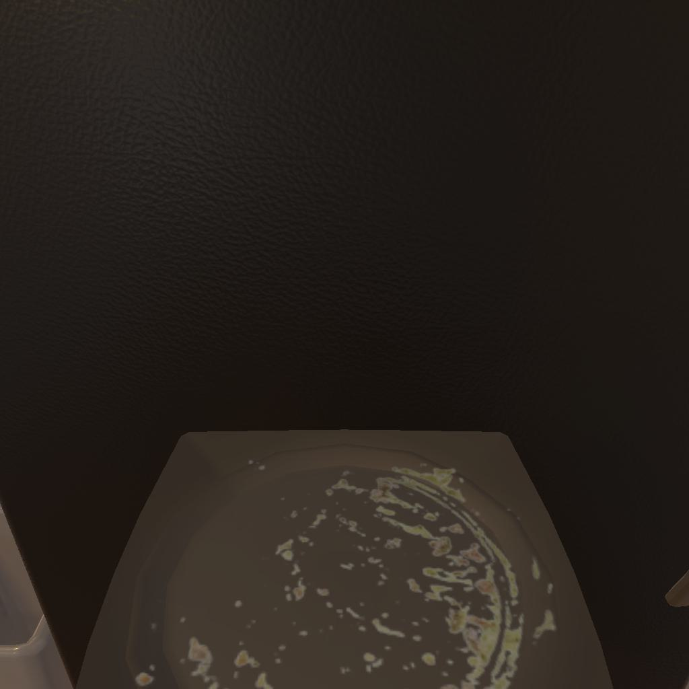

---------------------------------------------------------task: 13---------------------------------------------------------
--------------------------------------------------------------------------------------------------------------------------------------------------------------------
--------------------------------------------------------------------------------------------------------------------------------------------------------------------
Step:--------------------------------------------------------------------------14-------------------------------------------------------------------------------
----------------------------------------
VLM Prompt:
Image1:
**Instruction**
1. Analyze the provided image to identify all visible household objects, focusing on those relevant to the task description "clean some tomato and put it in garbagecan."
2. Use the analysis of the image and the task hint "The agent must find an object of the desired type, pick it up, go to a sink or a basin, clean the object with a sink or basin, and then find the correct location to place it and put it down there. The agent does not need to use soap bottle or faucet to clean the object, and the agent just needs to do action that is "clean the object with the sink or sink basin"." to answer the question: what is the most reasonable action in the choices for the task description "clean some tomato and put it in garbagecan"?
4. Decide and write the answer using the template: The answer is: (i): , where i is the real number. If there is no desired object in the image, search every place based on **Initial Observation** to find the object. And if no one is exactly correct, choose a similar answer.
**Initial Observation**
You are in the middle of a room. Looking quickly around you, you can see countertop (1-2), cabinet (1-11), garbagecan (1), toaster (1), sinkbasin (1), fridge (1), sink (1), microwave (1), drawer (1-3), stoveburner (1-4), coffeemachine (1), diningtable (1)
**Answer Choices**
(1): go to countertop 1
(2): go to cabinet 1
(3): go to cabinet 2
(4): go to cabinet 3
(5): go to garbagecan 1
(6): go to cabinet 4
(7): go to toaster 1
(8): go to sinkbasin 1
(9): go to sink 1
(10): go to cabinet 5
(11): go to microwave 1
(12): go to countertop 2
(13): go to cabinet 6
(14): go to cabinet 7
(15): go to drawer 1
(16): go to stoveburner 1
(17): go to stoveburner 2
(18): go to cabinet 8
(19): go to drawer 2
(20): go to stoveburner 3
(21): go to stoveburner 4
(22): go to coffeemachine 1
(23): go to cabinet 9
(24): go to cabinet 10
(25): go to cabinet 11
(26): go to diningtable 1
(27): go to drawer 3
(28): put plate 1 in/on fridge 1
(29): cool plate 1 with fridge 1
(30): examine plate 1
(31): examine fridge 1
**Answer**
Let's think step by step by following the instructions.
----------------------------------------
----------------------------------------
Original Response:
First, we need to identify any visible household objects related to the task in the provided image. The image shows a plate with some remnants of food, which appears to be tomato sauce or pieces of tomato.
Next, we will consider the task description "clean some tomato and put it in garbagecan." Based on this, we can assume that the goal is to clean the plate (which has tomato on it) and then dispose of it in the garbage can.
According to the task hint, the agent must find the object (in this case, the plate with tomato), clean it using a sink or sink basin, and then find the correct location to place it (the garbage can).
Considering the Initial Observation and the available answer choices, the most reasonable action would be to go to the sink or sink basin to clean the plate. Among the choices provided, the options to go to the sink or sink basin are (8): go to sinkbasin 1 and (9): go to sink 1.
Since the task is to clean the plate, the answer would be one of those two options. However, since we only choose one, we will select the first option related to cleaning.
The answer is: (8): go to sinkbasin 1.
----------------------------------------
----------------------------------------
>>> Refine Original VLM Response and Get Pure Action: go to sinkbasin 1
----------------------------------------
-----------------------------------------------------------------
Running time: 33.335824728012085 seconds
Total Money: 4.120659999999999
-----------------------------------------------------------------
-----------------------------------------------------------------
Text Observation:You arrive at loc 7. On the sinkbasin 1, you see a faucet 1.
-----------------------------------------------------------------
UNSUCCEED